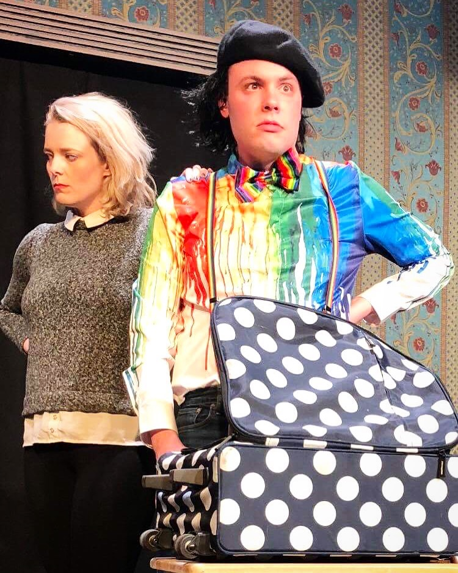
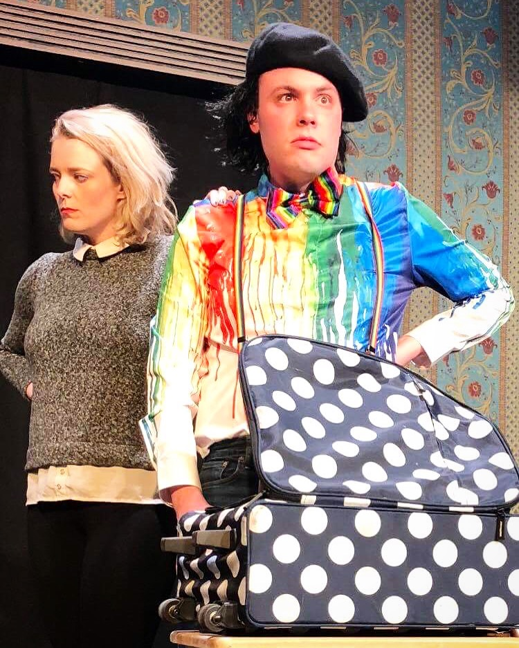
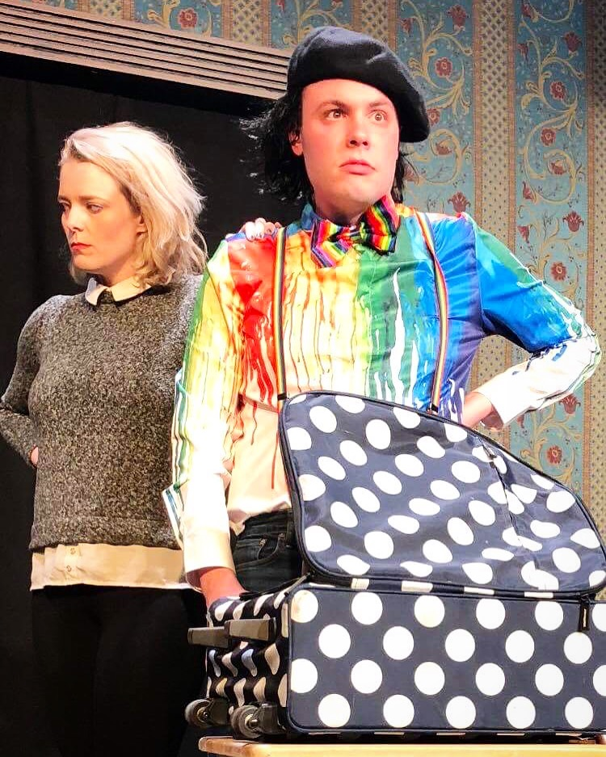

Marsden studied acting at The Second City and Black Box Acting Studio and has had the opportunity to perform in a number of productions. Recently, Marsden played the lead in a short film entitled Stages, as well as an FBI agent in the feature-length film, Disconnected, which was released in select theaters in fall 2018. Marsden was also in Funemployed, a sketch show that ran in Second City’s Blackout Cabaret.
